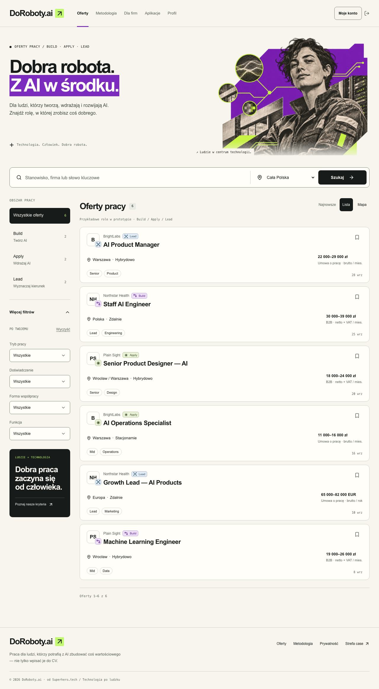
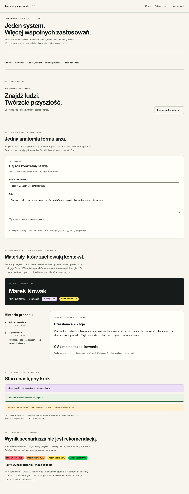
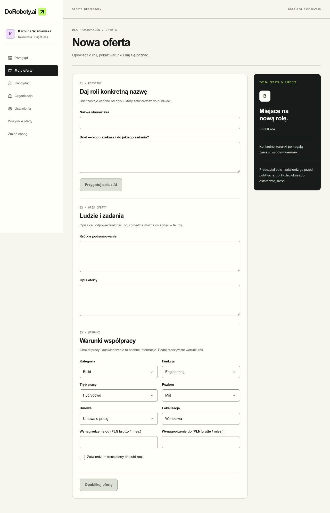

Comfortable consent targets
24px label height at desktop/390px became a shared 44px minimum at all three widths. This is a design-system target; no AA minimum violation was claimed.
The application was measured after releasing the accepted 1.1 package. All 128 focused measurements now pass against the same reference hash. No focused axe violations or runtime errors remain. The complete report maps all 25 families and documents approved host variations.
Read the audit report · Before measurements · After measurements
24px label height at desktop/390px became a shared 44px minimum at all three widths. This is a design-system target; no AA minimum violation was claimed.
remote/senior are now Zdalnie/Senior in visible chips and accessible removal names, while URL values and keyboard recovery stay intact.
Every JobCard article is associated with its own unique title heading, including shared callers and save-state changes.
Persisted enum values stay in the URL; visible labels and removal names now use canonical presentation text.
Same measured discovery/card type, C marker color roles and calm card geometry. Host records and richer salary facts remain authoritative.


The 1.1 composition gallery defines reusable groups and record surfaces. The host keeps its own single-page form and actual approvals.


38 route/person/state combinations are checked at 1280/390/320px. Desktop route axe checks and focused source/host measurements supplement keyboard, error, recovery, snapshot and long/missing-data journeys. No manual screen-reader session, physical-device test, complete WCAG certification, CI or deployment is claimed.